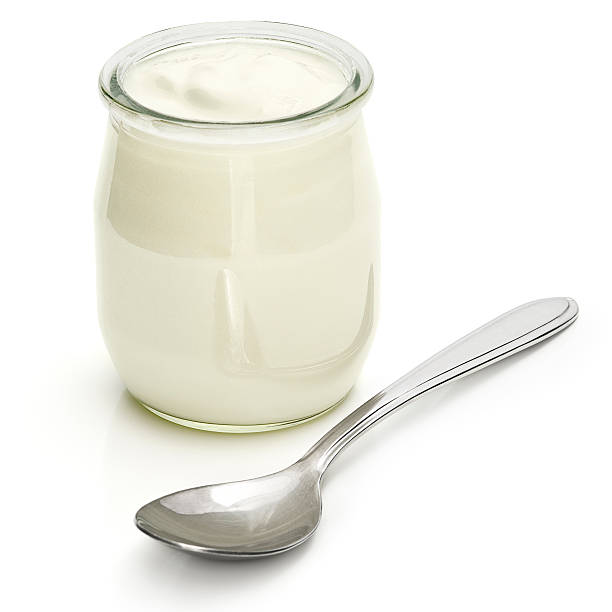
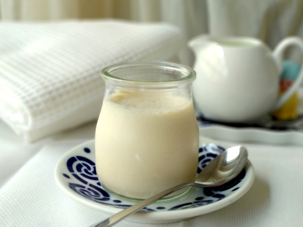
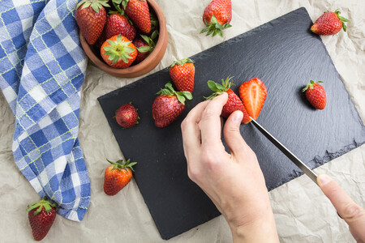
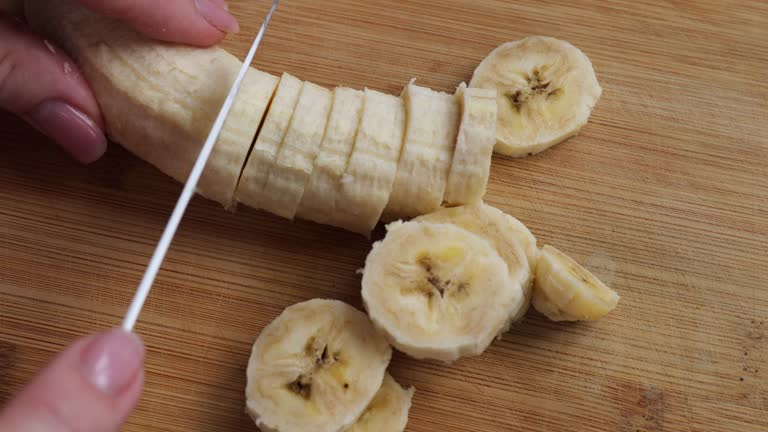
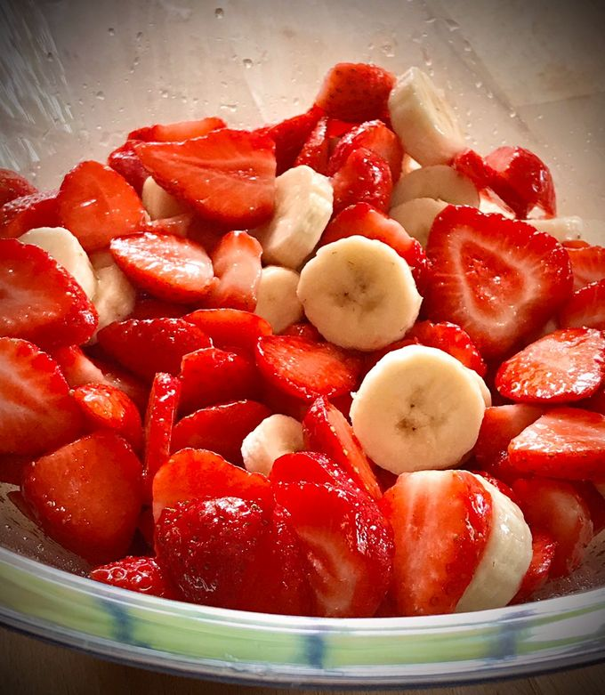

Volver a la página principal
Yogur natural con frutas
Índice
Ingredientes
- 1 yogur natural 
- 1 plátano

- 5 fresas

Paso a paso
-
Añade el yogur en un vaso o bol.

-
Corta la fruta en trozos pequeños.


-
Añade la fruta cortada sobre el yogur.

Resultado final

Volver arriba